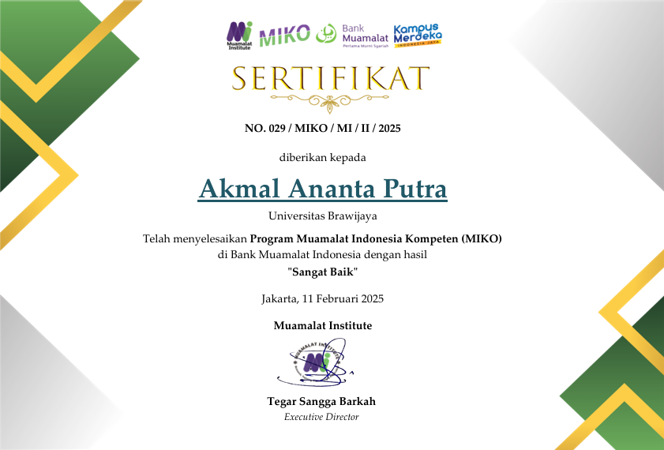

Akmal Ananta Putra
Summary
Saya merupakan lulusan jurusan ilmu ekonomi, dengan prodi ekonomi,keuangan dan perbankan.
Saya berasal dari indonesia yang sekarang sedang melakukan program magang di yamaha sumberjadi tanjung pandan,
memang terdengar agak aneh dengan lulusan ilmu ekonomi tapi belajar pemrograman untuk saat ini HTML.
Hal ini terjadi dikarnakan saya memiliki sifat penasaran, dan juga saya sangat suka menelurursi Web di internet
yang dimana membuat saya berpikir "bagaimana cara membuatnya?". Dan ini merupakan ringkasan diri saya dan juga
kenapa saya ingin mempelajari bahasa pemrograman.
Education
- Sarjana Ilmu Ekonomi (2022-2026)
Universitas Brawijaya
Work Experience
- Bank Muamalat Indonesia (2024-2025)
MBKM Intern / Busines & Banking Support
Mendukung aktivitas pemasaran dan customer engagement Bank Muamalat melalui pengenalan produk dan layanan,
tindak lanjut nasabah, serta bantuan pembukaan rekening melalui MDIN dan pembuatan Virtual Account.
Bertanggung jawab dalam pengelolaan data melalui M-Direct, pengecekan dokumen Tabungan iB SimPel,
serta penyusunan dan pemeriksaan laporan transaksi valuta asing (USD/SAR) guna mendukung kelancaran administrasi dan operasional bank.
Pengalaman ini juga mengembangkan kemampuan komunikasi, customer handling, ketelitian, dan kerja sama tim.
- Sumberjadi Yamaha Tanjung Pandan (2026-Present)
Intern / Business Development
Berkontribusi dalam kegiatan Business Development di Sumber Jadi Yamaha Tanjung Pandan sebagai intern dengan mendukung analisis peluang bisnis,
pemantauan kebutuhan pasar, serta pengembangan strategi pemasaran untuk meningkatkan penjualan dan memperluas jangkauan pelanggan.
Turut membantu kegiatan operasional dan koordinasi tim guna mendukung pencapaian target bisnis serta mengembangkan kemampuan analisis, komunikasi, dan pemecahan masalah.
Skill
- Word
- Excell
- Canva
- HTML (Beginner)
Certifications

Contact Me